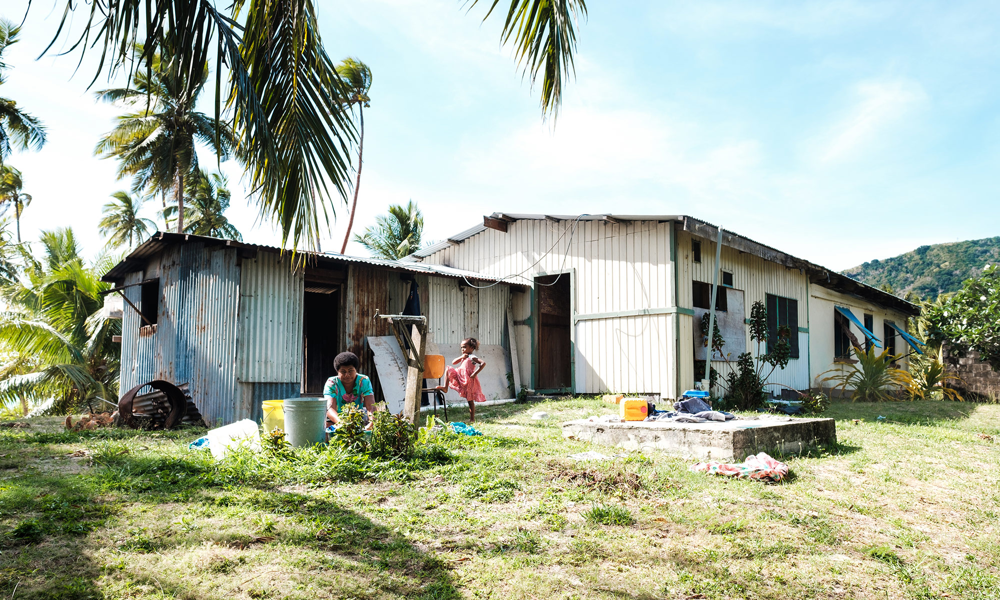
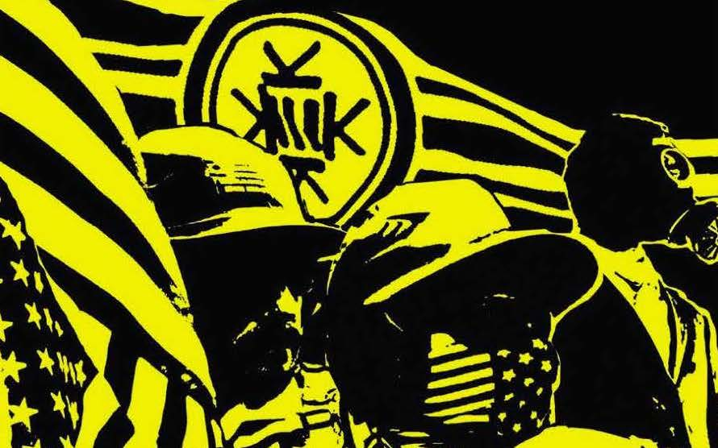
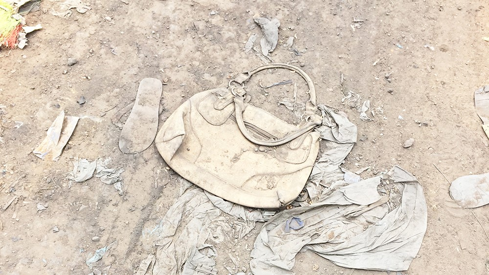

On November 6, Brianna Fruean and other Pacific Islands representatives marched in Glasgow as all eyes are on  the United Kingdom for the COP26 climate change summit happening this month. The chilly streets of Scotland and its winter are so far removed from the reality of the Pacific that we, in the Southern Hemisphere, can neither fathom nor imagine the cold. Unfortunately, the discussions at COP26 are similarly removed from the climate realities faced by Fijian women.
There is an aphorism that all budding entrepreneurs and grizzled veterans alike come to intimately understand: the market never lies. Americans have among the lowest life expectancy of high-income countries. — 77.3 years versus Switzerland, for example, at 83.2 years. The adult chronic disease burden stands at 24.6% of the population, compared to an average of 18% across these same countries. Obesity defined as a BMI of 30 or more is at a staggering 40% in the United States, compared to an average of 21% in the group.
The Israeli-Palestinian conflict has waxed and waned for several decades. The roots of it stem far
beyond
the most recent clashes in May that once again brought death and disaster to the region. The
question
arises: How far back do we look for an explanation of the current violence?
Do we start with the
1967
conflict that resulted in Israel occupying Gaza, the West Bank and East Jerusalem, along with the
Golan
Heights and the Sinai Peninsula? Or do we go back to the 1948 Arab-Israeli War — what the Israelis
call
the
War of Independence and the Palestinians the Nakba, or catastrophe? Or do we need to rewind further
back
to
the 1917 Balfour Declaration, a British letter of intent for “the establishment in Palestine of a
national
home for the Jewish people”? Or do we go all the way to the First Zionist Congress, convened in
Basel,
Switzerland, in 1897 amidst a wave of anti-Semitism rising across Europe?
The debate about the
origins
of the conflict goes on to this day. Regardless of the debate, the current situation in Israel and
the
Palestinian Territories has become unsustainable.
Shannon Reid, an associate professor in criminology and criminal justice at the University of North Carolina at Charlotte, joins this episode of “Right Rising.” She discusses youth gang activism within the white power movement in the US and our historical and contemporary conceptions of gang activity.  Along with host Augusta Dell’Omo, she walks us through the geography of white power gangs and gives us insight into what drives youths to join these gangs. Bringing her own experiences working with youth gangs, Reid offers some suggestions about what kinds of interventions may — or may not — be useful when working with white power youth.
The $2.7-trillion fashion industry is one of the largest, most resource-intensive sectors in the global economy, and it has a devastating impact on our environment.  The extraordinary success of “fast fashion” giants like H&M, Zara and Forever 21 stems from their ability to produce a massive amount of clothing — billions of garments a year — in the cheapest and quickest manner possible. An article of clothing often travels through dozens of countries and hundreds of hands, and ends up being worn only a few times.